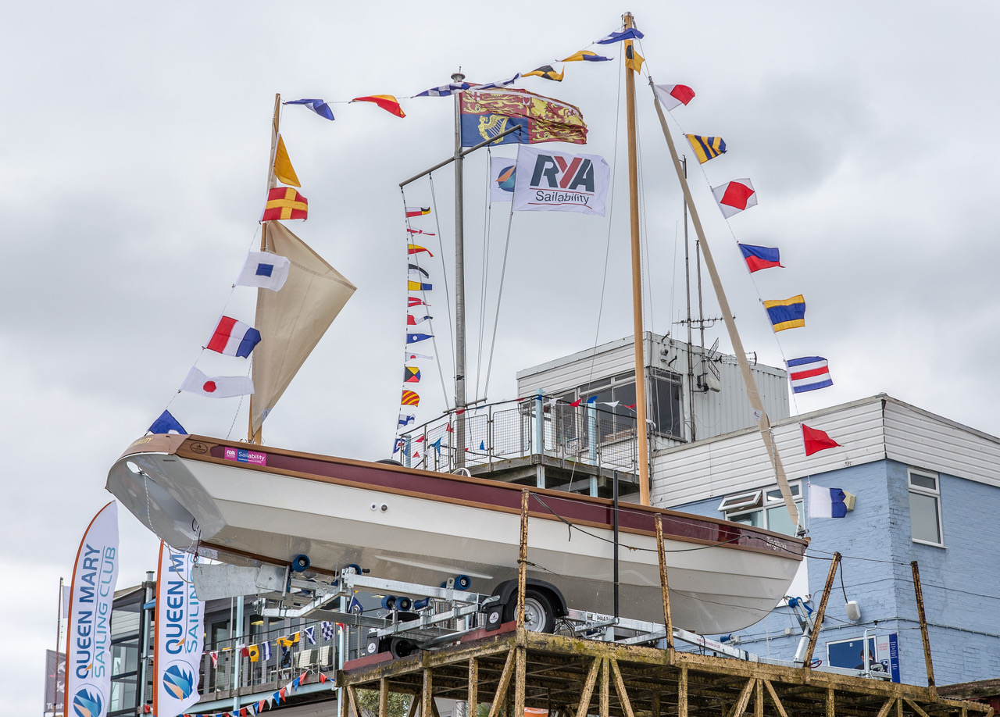
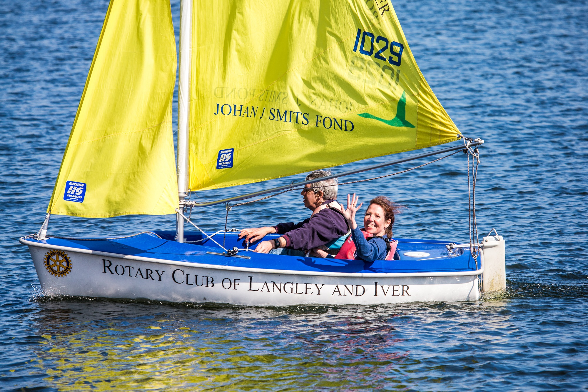

Sailability
Queen Mary Sailability's role is to provide a memorable sailing experience for children and adults who have any form of physical, sensory or learning disability with the full support of their family, carer or guardian. We strive to give empowerment and opportunity to the best of each sailor's ability on the water and we are committed to inspire all our sailors to enjoy the freedom to sail. Staffed by qualified and trained volunteers in a safe and caring environment, the group meets every Thursday from April to end October. No previous sailing experience required. We host Special Schools in the morning, and adults in the afternoon. Adults can sail socially in keel boats or those who are more competitive can participate in Hansa racing. There is also a Saturday Morning Club, integrating able bodied sailors for race training and racing on equal terms.
Join the Sailability Support team
Boats
We have a good selection of specially adapted boats including 2 Drascombe Longboats, 2 Yeoman keel boats and 6 Hansa dinghies which are specially designed for people with limited mobility. They are launched into the water by a boat hoist and there is a ramp down to a stable pontoon which is situated on the sheltered East side of the reservoir. A personal hoist is available on the pontoon to enable sailors with physical disabilities to get into boats.

Events
Our sailors have the opportunity to take part in the Queen Mary Bloody Mary which is held in January, Bart's Bash in September and join us for the Christmas lunch in December.
Recent achievements – In the 2015 Bart's Bash, Janet who was diagnosed with multiple sclerosis in 1994, finished First Hansa. She was second out of 63 disabled sailors worldwide and came 422nd out of 4526 boats overall. Nev who suffered a water ski accident 3 years ago and is now confined to a wheelchair started off in a Hansa and now trains with Paralympians and travels abroad to events in a 2.4m.
Email us for more detail. Come and meet the Support Team and our sailors.
In June 2017 we enjoyed the company of HRH The Princess Royal to celebrate Sailability's 20th anniversary which included the naming ceremony of the new Drascombe Longboat "Zingaroo"
Sponsorship received
- Spelthorne Borough Council – we recently received an £8,000 Spelthorne Windfall Grant to match a donor's funding for Zingaroo
- Shepperton Rotary Aurora Breakfast Club have been very supportive
- Many personal generous donations over the years.
Join In
To enquire about our activities or if you would be willing to give some of your time to assisting please email QMSailability@gmail.com
You would be most welcome. Our season starts on the first Thursday in April for adults and the week after Easter Holidays for schools.
£5/adult - £5/student – Parents, guardians, Teachers and Carers free.
Sailing will put a smile on your face - Give it a go!

Sailability Adult Session — £5.00
An adult Sailability sailing session in Hansa Dinghies. Some training but mostly racing!
If you have not joined a session previously please do contact the Sailability team for more information.